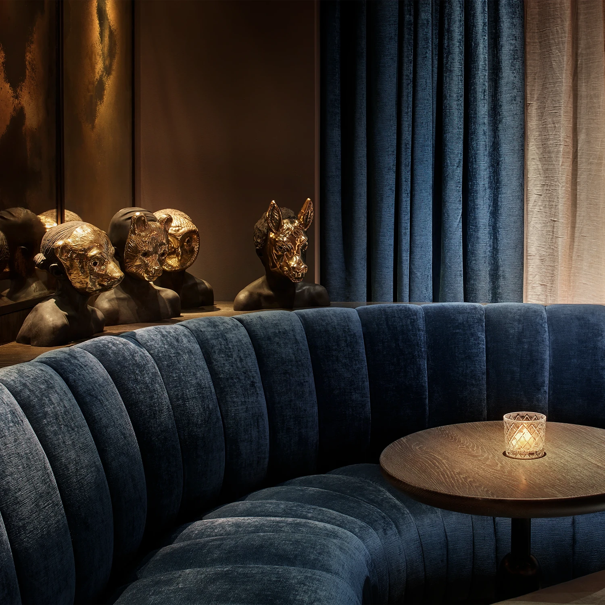
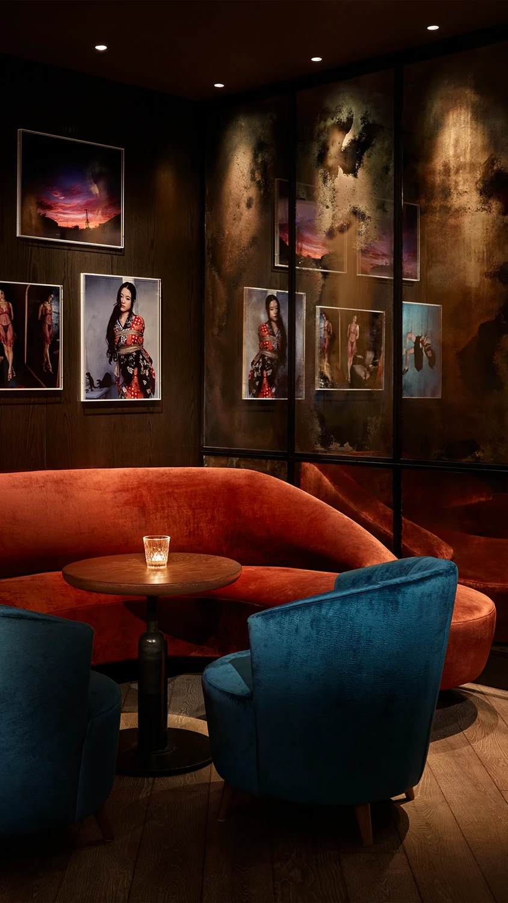

Working with 11 Howard’s creative director Anda Andrei, Space Copenhagen chosematerials that would age gracefully—stones, woods, leathers—and ensure the hotel assimilated into the gritty, urban fabric. Due to zoning regulations in this part of the city, the hotel had to forego a traditional lobby with check-in and concierge desks. Rather, guests enter a small space on the ground floor with a handful of tables and chairs, and are checked in by members of staff with iPads. Relinquishing the reception desk offered the freedom to design the lobby like a sculpture garden, featuring a mobile by artist Alexander Calder suspended from the ceiling and an undulating screen that’s both feminine and cozy.
The rest of the public areas of the hotel are on the first floor, which is reached by climbing a giant spiral staircase that naturally gestures visitors upwards. Wrapped around a thick column, this heavy, sculptural metal piece really feels like it belongs in SoHo. At the top is a library and a bar called The Blonde, decorated with dark woods and golden metals, and intended to welcome hotel guests during the day, visitors in the evening, and transform into a nightclub later on. These communal spaces are furnished with a mixture of vintage pieces and Space Copenhagen designs, including the Rén Dining Armchair and Rén Lounge Chair Two Seater produced by Stellar Works. Both perennial favorites in the SW collection, the designs are characterized by their stylish silhouettes, gently angled solid-wood legs, and relaxed seating position. Their frame finishes and cushion upholstery can be customized to suit a range of interior styles, though the classic black oak and leather combination demonstrated at 11 Howard is hard to beat for its timelessness.
After almost a decade, the furnishings and the hotel overall still look as fresh and contemporary as they did on opening day, while many of the materials have beautifully softened and intentionally patinated so that 11 Howard feels well bedded into its creative, ever-shifting neighborhood.
The building, a former post office, was overhauled by local preservation specialists Beyer Blinder Belle before Space Copenhagen worked its magic across the interiors. The studio brought highly venerated Danish design to the spaces, and filled the hotel with its custom furniture designs—including several products created in collaboration with Stellar Works.
